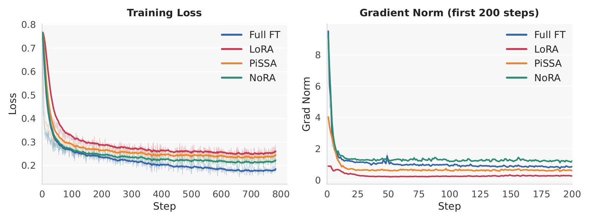

LoRA's earliest optimization is decided entirely by the down-projection. That is where the scale problem lives, and where the fix belongs.
LoRA is the default way to adapt a large model cheaply, but how to regularize its training dynamics is still largely unexplored. Because LoRA initializes the up-projection to zero, the down-projection A alone governs the early trajectory. NoRA normalizes A along the rank dimension — every column unit-norm — which keeps the update exactly linear in the input and exactly mergeable, while removing the arbitrary per-coordinate scale imbalance that random initialization introduces. The same normalization applied only once at initialization already recovers most of the gain.
- The down-projection is an underused design dimension. With B(0) = 0, A receives no gradient at step 0, so A(0) fixes both the learning rates and the input subspace during the decisive early phase.
- Normalize along the rank dimension, not the input dimension. Column-wise normalization (Normr) lifts the SFT average from 29.3 to 37.2; row-wise normalization (Normk) does essentially nothing.
- Mergeability is preserved. Norm(A) depends only on the adapter parameters, not on the input, so Δy = αB Norm(A)x stays linear in x and folds back into W after training.
- Initialization does most of the work. NoRA-init normalizes once and then trains as plain LoRA, reaching 42.38 SFT average against LoRA's 37.93; the persistent constraint adds the rest (43.37).
- It is a preconditioner correction. LoRA is full finetuning with the gradient right-multiplied by P = α2A⊤A. NoRA sets diag(P) = I and keeps it there.
The down-projection decides LoRA's early training
LoRA parameterizes the weight update of a pretrained matrix as ΔW = αBA, with A ∈ ℝr×k randomly initialized and B ∈ ℝd×r initialized to zero. The zero initialization is what preserves the pretrained model at step 0 — and it is also what makes the down-projection decisive. Writing G = ∂L/∂W for the full-weight gradient:
Existing work already shows that initialization matters a great deal here. PiSSA and MiLoRA build the initial subspace from the spectral structure of the pretrained weights and converge faster than random initialization — but they require an SVD, they modify the pretrained decomposition, and they can be fragile in reinforcement learning. Other lines of work change the scaling, the parameterization, or freeze the projections. None of them asks the narrower question: what happens if we simply regularize the magnitude of the down-projection?
It helps to put existing methods in one frame. Every low-rank method builds a latent feature φ(x) ∈ ℝr that is handed to the up-projection, Δy = αBφ(x):
| Method | Forward computation | Initialization / prior |
|---|---|---|
| Full-parameter and standard low-rank adaptation | ||
| Full finetuning | y = W0x | — |
| LoRA | y = W0x + BAx | A ~ N(0, σ2), B = 0 |
| Structured or constrained parameterizations | ||
| DoRA | y = m (W0x + BAx) / ‖W0 + BA‖c | Kaiming init, B = 0 |
| MiSS | y = W0x + expand(D)x | Fixed structured projection |
| LoRA-FA | y = W0x + BAx | Frozen random A, B = 0 |
| VeRA | y = W0x + ΛbBΛdAx | Frozen random A, B |
| Initialization-based low-rank adaptation | ||
| PiSSA | y = (W0 − BA)x + BAx | Top-r SVD initialization |
| MiLoRA | y = (W0 − BA)x + BAx | Minor-component SVD init |
| NoRA-init | y = W0x + BAx | A = Norm(A), B = 0 |
| NoRA | y = W0x + B Norm(A)x | B = 0 |
From normalized latent features to a normalized projection
Our starting observation comes from Multi-head Latent Attention. MLA constructs its low-dimensional latent as φ(x) = Norm(Ax), and that normalized bottleneck noticeably stabilizes training and speeds up convergence. The obvious move — drop the same operation into LoRA — does not work. Normalizing Ax makes the transformation depend on the input, so the update becomes nonlinear in x and can no longer be folded back into the pretrained weight matrix. LoRA's mergeability is exactly the property nobody wants to give up.
So we move the normalization off the feature and onto the matrix. Each column aj of A ∈ ℝr×k describes how input coordinate j is projected into the r-dimensional latent space. Modern transformers are pre-normalized, so the input x to each linear layer is already scale-controlled; what remains uncontrolled is the spread of those column norms. NoRA fixes them:
The transition is from MLA's input-dependent latent normalization, B Norm(Ax), to NoRA's normalized low-rank projection, B Norm(A)x.
NoRA-init and the block-identity variant
The normalization principle admits two ways of being applied. NoRA enforces it as a training constraint, re-normalizing A along the rank dimension throughout training. NoRA-init applies it once — A(0) = Norm(Ainit), B(0) = 0 — and then trains with the standard LoRA parameterization, no re-normalization, no change to the optimizer. NoRA-init retains most of the benefit, which is itself the evidence that the early phase is where the scale problem does its damage.
There is also a deterministic way to satisfy the constraint. BIMI (Block Identity Matrix Initialization) builds A from repeated identity blocks: for k = br + q with 0 ≤ q < r,
This also explains an existing method. MiSS shares matrix shards, and its update Δy = αB[Ir, …, Ir]x is precisely LoRA with a fixed block-identity down-projection — whose columns are already unit-norm. MiSS is therefore a special case of NoRA in which A is frozen at Afix. That predicts MiSS should show the same early-gradient signature as NoRA, and in the figure above it does. BIMI is what you get by keeping the construction but letting the projection train.
Why it works: LoRA has a hidden preconditioner
Take a gradient step of size η on B at initialization: ΔB = −ηαGA⊤, while A receives no gradient and stays fixed. The induced change of the merged weight is
Reading P column by column makes the failure mode concrete. The column norms of A are per-coordinate learning rates:
For zero-mean i.i.d. entries with σ2 ∝ 1/k, E‖aj‖2 = rσ2 ∝ r/k ≪ 1. At any moderate α, gradient flows through the adapter at a small fraction of the full-finetuning rate.
‖aj‖2 fluctuates around its mean with relative spread of order 1/√r. At small rank, each input coordinate is handed a learning rate at random — unrelated to the data or the curvature.
Setting every ‖aj‖2 = 1 with α = r (under the α/r convention) makes diag(P) = I deterministically and E[P] = I, so the adapter's gradient norm matches full finetuning's in expectation, independent of r.
A preconditioner should remove distortion, not add its own. Two consequences follow, and both are testable. Row normalization (Normk) leaves diag(P) random of order r/k, so it should bring no gain — and it does not. BIMI uses unit basis vectors as columns, giving the same diagonal through a completely different crosstalk pattern, so if the diagonal is what matters it should perform like normalized random initialization — and it does. That points at diag(P) as the decisive quantity.
Finally, why keep the constraint at all if initialization does most of the work? Because it adds two things. The loss becomes invariant to each column's scale, so gradients are tangential and, under gradient descent, norms can only grow while the effective step anneals automatically — the familiar behaviour of weight-normalized training. And diag(P) = I is enforced for the whole run on a compact set of directions, so the latent scale can neither collapse nor explode, while the update stays linear in x and merges exactly.
Which dimension should be normalized?
Given A ∈ ℝr×k, there are two normalizations to try: Normk normalizes each row, Normr normalizes each column A:,j ∈ ℝr. The preconditioning argument says only the second one should matter, and only the second one does. Normr adds roughly seven points of average accuracy under every initialization distribution we tried; Normk adds nothing. The benefit is essentially independent of the initialization distribution, and BIMI — deterministic, no randomness at all — lands in the same place.
| Initialization | Method | GSM8K | Math | Avg. |
|---|---|---|---|---|
| U(−1/√k, 1/√k) | None | 47.68 | 10.86 | 29.27 |
| Normk | 48.67 | 10.82 | 29.75 | |
| Normr | 60.12 | 14.20 | 37.16 | |
| N(0, 1/r2) | None | 50.41 | 11.68 | 31.05 |
| Normk | 49.73 | 11.34 | 30.54 | |
| Normr | 59.96 | 13.93 | 36.95 | |
| U(−1, 1) | None | 48.19 | 11.02 | 29.61 |
| Normk | 48.29 | 10.86 | 29.58 | |
| Normr | 58.98 | 14.34 | 36.66 | |
| [Ir, …, Ir] | BIMI | 59.89 | 14.24 | 37.07 |
Pretraining: normalization prevents optimization collapse
We start from controlled MLA experiments, where normalizing the latent Ax consistently improves performance and accelerates convergence, and then carry the same principle over to the linear low-rank form. Under MLA, NoRA-init converges faster and scores better than the standard low-rank parameterization; it remains slightly behind directly normalizing Ax, but it keeps the BAx structure and with it the mergeability and deployment efficiency.
The MHA setting is where the difference becomes dramatic. Parameterizing every attention projection (q, k, v, o) with rank r = 64 low-rank factors, the standard parameterization collapses outright on LAMBADA and degrades badly elsewhere; its gradient norms fall to abnormally low levels during training. NoRA-init keeps gradient magnitudes well-scaled throughout and avoids the collapse entirely. Capacity alone does not determine optimization behaviour — under the same rank constraint, changing only the initialization of the projection changes the training dynamics.
| Model & scale | Params | Lamb.† ppl↓ | Wiki. ppl↓ | Lamb. acc↑ | ARCe | ARCc | Hella. | PIQA | Wino. | OBQA | Avg.↑ |
|---|---|---|---|---|---|---|---|---|---|---|---|
| MLA — 10B training tokens, 0.5M batch tokens | |||||||||||
| B Norm(Ax) | 342.4M | 48.73 | 32.24 | 30.62 | 56.99 | 27.56 | 36.26 | 63.49 | 51.30 | 22.00 | 41.17 |
| BAx | 342.4M | 61.83 | 32.89 | 28.70 | 54.63 | 26.02 | 35.88 | 63.66 | 51.62 | 22.00 | 40.36 |
| BAx (NoRA-init) | 342.4M | 50.77 | 32.42 | 29.87 | 54.04 | 26.37 | 36.11 | 63.76 | 52.72 | 21.60 | 40.64 |
| MHA — 10B training tokens, 0.5M batch tokens | |||||||||||
| Wx (full) | 348.7M | 47.95 | 31.31 | 30.55 | 54.59 | 26.45 | 36.95 | 65.07 | 51.22 | 22.60 | 41.06 |
| BAx | 289.3M | — | — | 0.00 | 25.17 | 28.07 | 25.97 | 49.78 | 49.49 | 16.20 | 27.81 |
| BAx (NoRA-init) | 289.3M | 63.45 | 34.39 | 28.29 | 54.38 | 26.02 | 35.10 | 63.49 | 50.91 | 19.60 | 39.69 |
Supervised finetuning: adaptation without spending retention
On Llama-3.2-3B across mathematical reasoning and code generation, NoRA gives the best overall SFT average among the compared methods, lifting LoRA's 37.93 to 43.37 — a gain of 5.44 points — with particularly clear improvements on GSM8K (50.94 → 61.63) and HumanEval (37.20 → 42.10). It also outperforms PiSSA, OFT, rsLoRA and MiSS on average, at the same 48.6M trainable parameters as LoRA.
The split between the two variants is informative. NoRA-init alone reaches 42.38, capturing most of the gap; maintaining the constraint through training adds the remaining point. Controlling the input-to-latent magnitude at initialization accounts for the bulk of the benefit, and persistent normalization contributes a further, smaller improvement.
| Method | Trainable | GSM8K | Math | HumanEval | MBPP | SFT avg. | MMLU | AGIEval | ARC-C | Avg. Δ |
|---|---|---|---|---|---|---|---|---|---|---|
| Base model | — | — | — | — | — | — | 55.10 | 23.99 | 42.92 | 0.00 |
| Full FT | 3B | 65.12 | 17.96 | 36.15 | 49.05 | 42.07 | 54.17−0.93 | 26.25+2.26 | 41.64−1.28 | +0.02 |
| PiSSA | 48.6M | 54.66 | 12.08 | 39.00 | 55.30 | 40.26 | 54.43−0.67 | 23.99+0.00 | 42.75−0.17 | −0.28 |
| OFT | 53.7M | 56.10 | 13.02 | 38.40 | 54.20 | 40.43 | 54.72−0.38 | 25.23+1.25 | 43.60+0.68 | +0.52 |
| rsLoRA | 48.6M | 57.05 | 12.32 | 39.65 | 56.10 | 41.28 | 54.07−1.03 | 24.58+0.60 | 41.81−1.11 | −0.51 |
| MiSS | 49.5M | 60.80 | 14.60 | 39.60 | 55.80 | 42.70 | 53.40−1.50 | 24.33+0.34 | 41.98−0.94 | −0.70 |
| LoRA-style parameterization | ||||||||||
| LoRA | 48.6M | 50.94 | 10.38 | 37.20 | 53.20 | 37.93 | 54.27−0.83 | 24.40+0.42 | 41.64−1.28 | −0.56 |
| NoRA-init | 48.6M | 59.89 | 14.24 | 39.60 | 55.80 | 42.38 | 54.09−1.01 | 25.10+1.11 | 42.24−0.68 | −0.19 |
| NoRA | 48.6M | 61.63 | 14.46 | 42.10 | 55.30 | 43.37 | 54.00−1.10 | 25.32+1.33 | 42.75−0.17 | +0.02 |
| DoRA-style parameterization | ||||||||||
| DoRA | 49.4M | 51.63 | 11.36 | 37.80 | 52.40 | 38.30 | 54.20−0.90 | 24.09+0.10 | 41.81−1.11 | −0.64 |
| NoRA-init | 49.4M | 59.59 | 14.10 | 38.70 | 53.20 | 41.40 | 53.65−1.45 | 24.84+0.86 | 42.32−0.60 | −0.40 |
| NoRA | 49.4M | 61.33 | 14.44 | 42.10 | 55.60 | 43.34 | 54.00−1.10 | 24.59+0.58 | 42.15−0.77 | −0.43 |

Two further observations. NoRA outperforms MiSS (42.70) while keeping the down-projection trainable, so the block-identity construction is not doing anything a normalized trainable projection cannot. And the principle transfers: applying Normr to DoRA lifts its SFT average from 38.30 to 41.40 for NoRA-init and 43.34 for NoRA, which suggests rank-dimension normalization is a general property of low-rank adaptation rather than a LoRA-specific trick.
Retention comes along for free. NoRA's average change across MMLU, AGIEval and ARC-C is +0.02, against −0.56 for LoRA and −0.70 for MiSS — it improves adaptation without spending the pretrained model's general knowledge to do it.
RLVR: stable where spectral initialization is not
Under reinforcement learning with verifiable rewards on DeepSeek-R1-Distill-Qwen-1.5B, LoRA lifts the overall average from 41.0 to 42.8 and NoRA takes it to 44.4 — 3.4 points over the base model and 1.6 over LoRA — with the clearest gains on AMC, MATH500 and Minerva.
The more striking result is what happens to the spectral-initialization methods. PiSSA and MiLoRA are competitive under supervised finetuning, but here they degrade catastrophically: MiLoRA drops to 18.0 and PiSSA to 0.2, consistent with earlier reports of optimization instability for spectral initialization in RL. NoRA never touches the spectral structure of the pretrained weights, needs no SVD, and stays stable across both regimes.
| Method | AIME24@32 | AIME25@32 | AMC@32 | HMMT@32 | MATH500@4 | Minerva@4 | Avg. |
|---|---|---|---|---|---|---|---|
| Base | 24.3 / 70.0 | 20.4 / 53.3 | 64.8 / 95.0 | 9.9 / 36.7 | 80.9 / 92.8 | 27.8 / 43.0 | 41.0 |
| MiLoRA | 4.2 / 6.7 | 0.0 / 0.0 | 19.6 / 47.5 | 0.0 / 0.0 | 44.5 / 63.4 | 11.7 / 19.9 | 18.0 |
| PiSSA | 0.0 / 0.0 | 0.0 / 0.0 | 0.0 / 0.0 | 0.0 / 0.0 | 0.6 / 1.0 | 0.1 / 0.4 | 0.2 |
| LoRA | 28.0 / 60.0 | 23.1 / 53.3 | 68.0 / 97.5 | 10.3 / 35.0 | 81.3 / 92.2 | 30.1 / 46.3 | 42.8 |
| NoRA | 26.7 / 66.7 | 23.5 / 46.7 | 72.7 / 97.5 | 10.3 / 35.0 | 84.5 / 92.8 | 32.0 / 47.8 | 44.4 |
What we learn
- LoRA's effectiveness depends not only on its rank but on the geometry and scale of its down-projection.
- The useful part of MLA's normalized latent can be transferred to LoRA without giving up linearity in x or exact mergeability — move the normalization from the feature to the matrix.
- Normalize along the rank dimension. The input dimension is the wrong axis, and the preconditioning view says why: only diag(P) is corrected by column normalization.
- Most of the benefit is set at initialization, because A's gradient vanishes with B. The persistent constraint buys stability, not the bulk of the gain.
- Methods that depend on the pretrained spectrum can be strong under SFT and fragile under RL. Normalization is cheap, distribution-agnostic, and holds up in both.
Settings
For NoRA we recommend α = r as the default, which puts the early gradient norm close to full finetuning. A larger scaling factor such as α = 2r can fit the loss better in some cases, but we observe increased forgetting of pretrained knowledge; given that trade-off, α : r = 1 : 1 is the configuration we use and recommend.
FLA repository, MLA / MHA at L24-D1024. AdamW, peak LR 3×10−4, ε = 10−15, cosine decay to 10%, 1,024 warmup steps, 20,480 steps, batch 256, sequence length 2,048, grad clip 1.0. Evaluated on LAMBADA, WikiText, ARC-e/c, HellaSwag, PIQA, OpenBookQA, WinoGrande.
MetaMath and CodeFeedback. Rank 32, α = 32 for NoRA (64 for LoRA/DoRA/rsLoRA, 32 for PiSSA), dropout 0.0, AdamW, LR 2e-5, cosine decay, batch 128, warmup ratio 0.3, 1 epoch, targeting Q, K, V, O, Up, Down, Gate. Evaluated on GSM8K, Math500, HumanEval, MBPP; retention on MMLU, AGIEval, ARC-C.
DAPO objective on DAPO-Math-17K, 8 GPUs, bfloat16. LR 1×10−5, cosine schedule, no warmup, 1,024 steps, batch 128, rank 32, α = 64, dropout 0.05, 8 responses per prompt, prompt length 512, completion length 16,384, εhigh = 0.28, β = 0.
RLVR is evaluated on AIME24 and AIME25 (Avg@32), AMC (Avg@32), HMMT (Avg@32), MATH500 (Avg@4) and Minerva (Avg@4). Pretraining uses lm-evaluation-harness for commonsense tasks; the recall-intensive LAMBADA setting follows prefix-linear-attention with 2K input tokens.
Authors
Citation
@article{kang2026nora,
title={Normalized Low-Rank Adaptation},
author={Kang, Jiale and Yue, Ziyin and Zhan, Zheng and Huang, Yangyi and Liu, Weiyang},
journal={arXiv preprint arXiv:XXXX.XXXXX},
year={2026}}